AIチャットログ
AIチャットログについて
AIチャットログ画面より、各利用者のチャットログの閲覧とダウンロードが行えます。
チャットログの閲覧
-
管理画面左側から、AIチャットログをクリックすると、チャットログ画面が表示されます。（最新100件のみ）
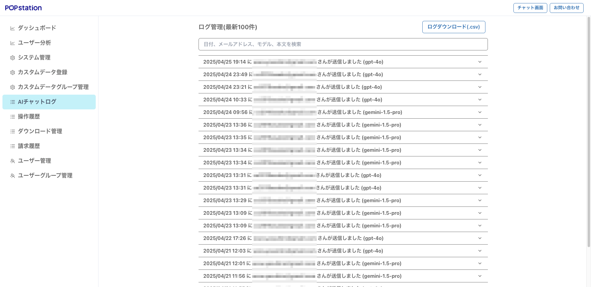
-
各履歴の詳細を閲覧するためには、右端に表示されている「▽」をクリックしてください。
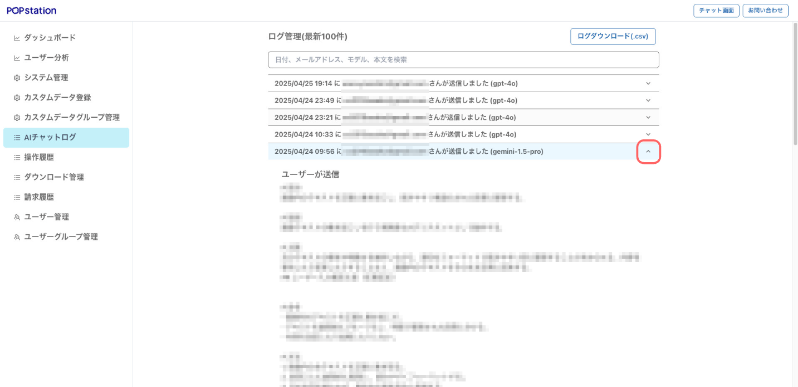
チャットログの検索
-
チャットログ画面上部の入力フォームに検索するキーワードを入力します。
- キーワード例：チャット名、モード名、日付、メールアドレス、モデル名、本文
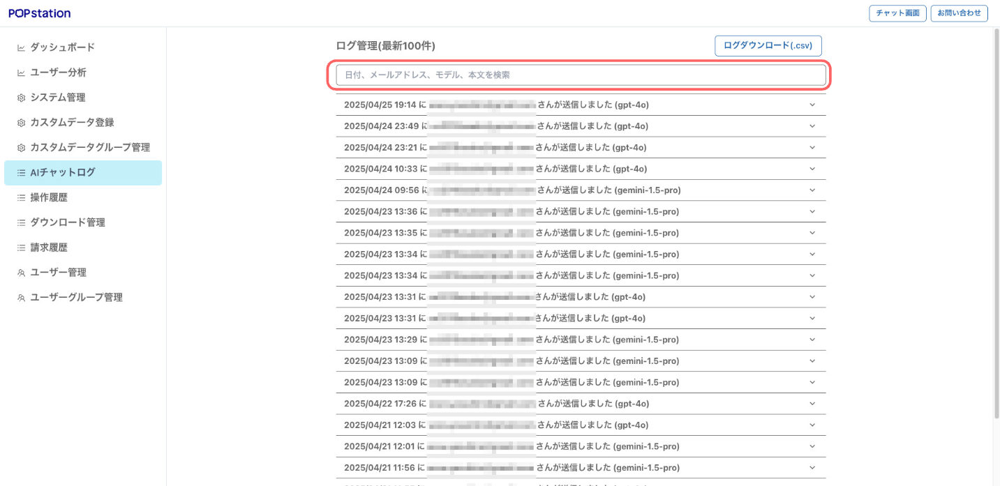
-
検索結果が表示されます。
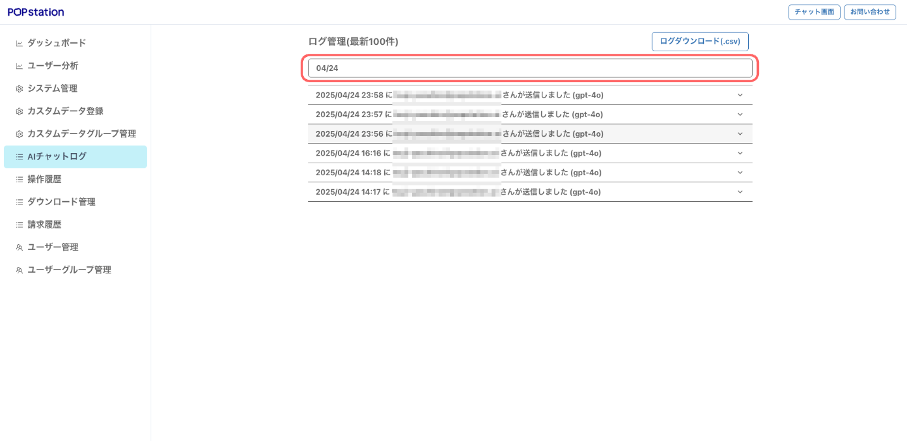
-
キーワードを含むログが見つからなかった場合、「検索結果が見つかりませんでした」と表示されます
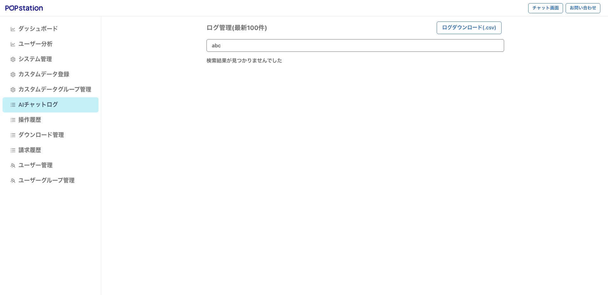
チャットログのダウンロード
チャットログのダウンロードを行いたい場合、ログダウンロードをクリックしてください。
-
ログダウンロードボタンをクリックしてください。
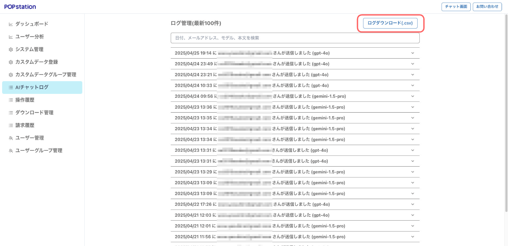
-
ダウンロードする月を選択し、ダウンロード申請ボタンをクリックしてください。
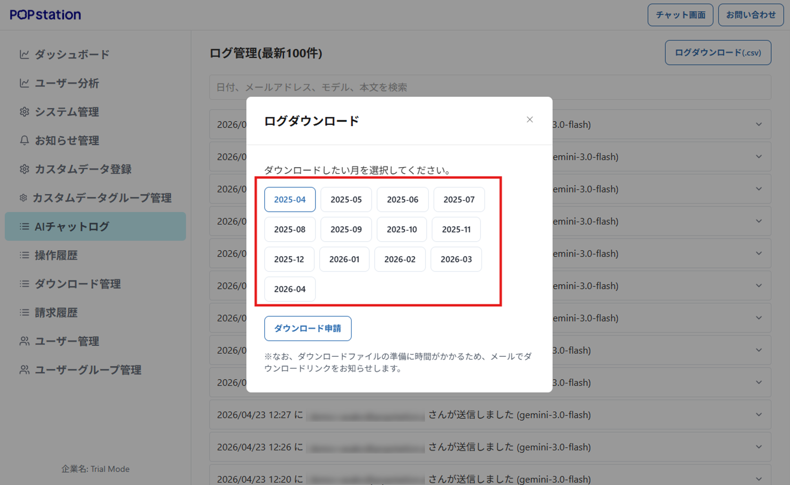
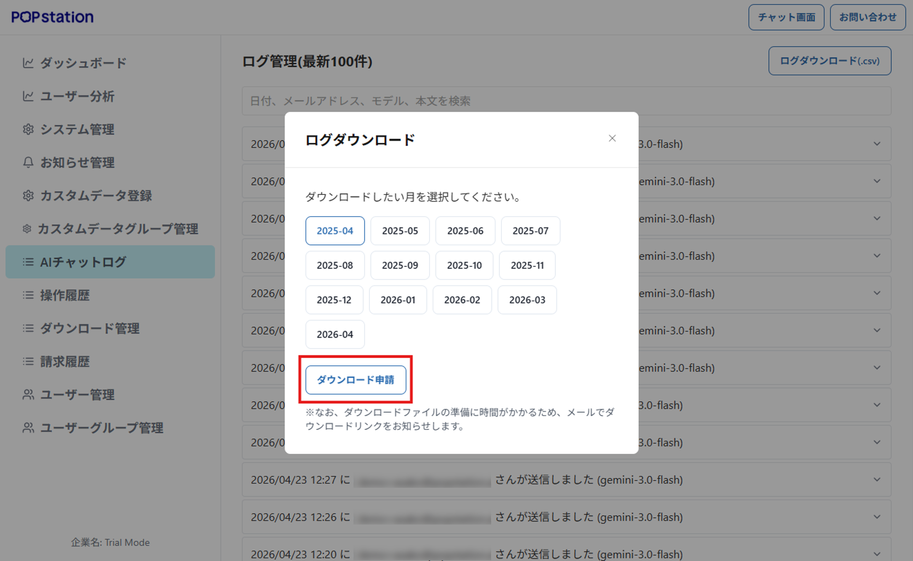
-
画面下部にダウンロード申請完了の文字が表示されます。
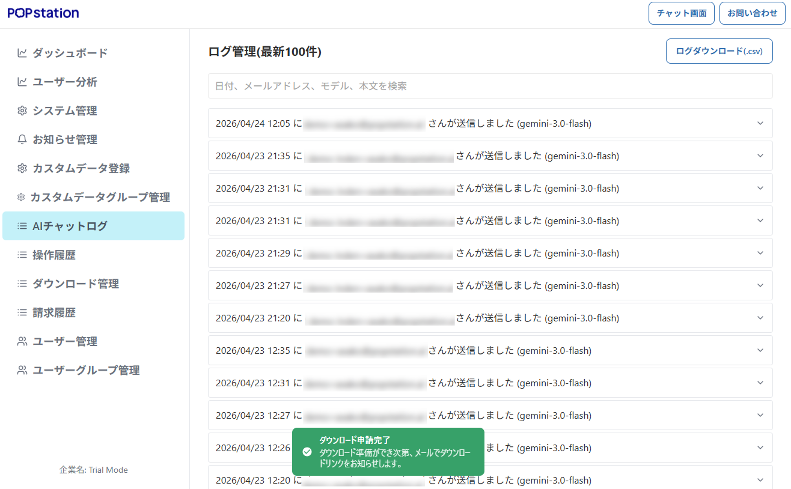
-
登録されているメールアドレスにPOPstationからメールが送られます。
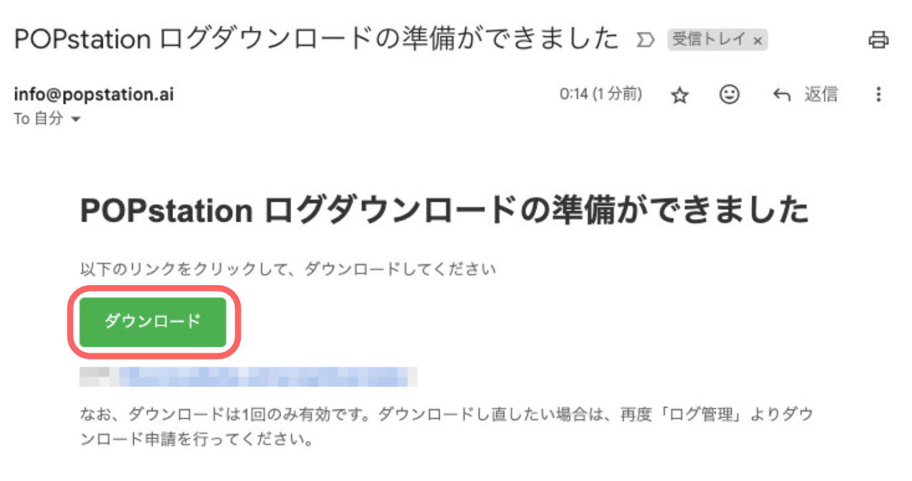
-
送信されたメールのダウンロードボタンをクリックしてください。
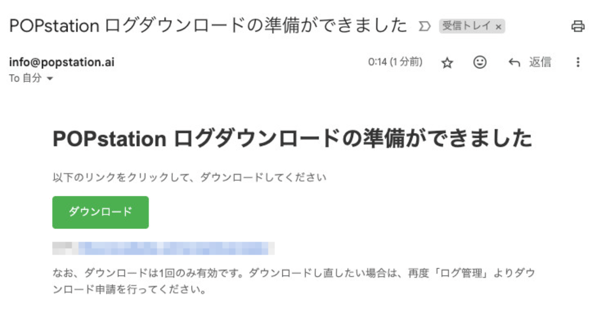
-
POPstationのダウンロード管理画面が表示されます。
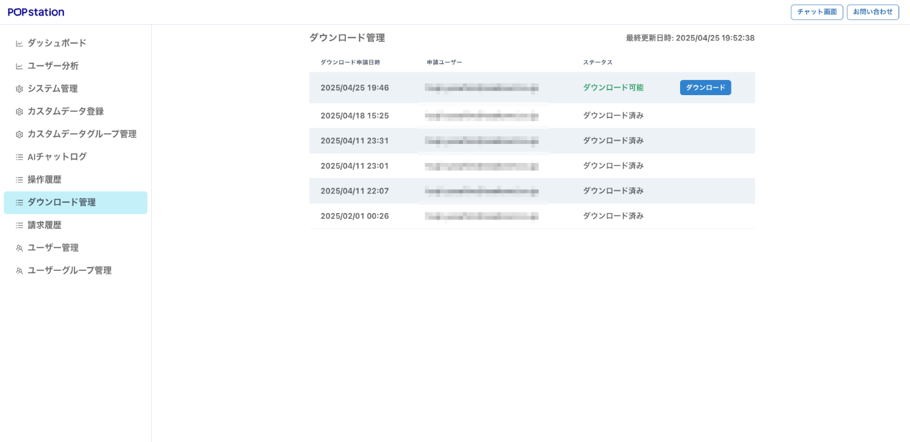
-
申請したアドレスと、ダウンロード可能と表示されている欄のダウンロードボタンをクリックしてください。
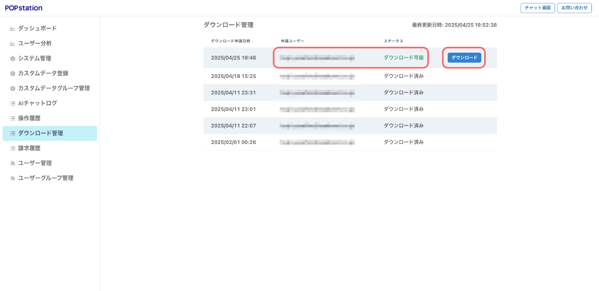
-
チャットログデータがダウンロードされます。
チャットログのカラム説明
チャットログには以下の情報が含まれています。各カラムの詳細は下記の通りです。
チャットログの各カラム説明
- Created At（作成日時）: AIとの会話が行われた正確な日付と時刻。いつ対話が発生したかを時系列で追跡できます。
- Email（メールアドレス）: 会話を行ったユーザーの登録メールアドレス。ユーザーへの連絡やアカウント識別に使用されます。
- User Name（ユーザー名）: 会話を行ったユーザーの表示名。組織内でのユーザー識別に役立ちます。
- User ID（ユーザーID）: システム内でユーザーを一意に識別するための固有番号。同姓同名のユーザーがいても区別できます。
- Request Text（リクエスト内容）: ユーザーが実際にAIに対して送信した質問や指示の全文。どのような問い合わせがあったかを確認できます。
- Response Text（応答内容）: AIがユーザーのリクエストに対して返答した全文。どのような情報や解決策が提供されたかを確認できます。
- Usage Prompt（入力文字数）: ユーザーがAIに送信したテキストの文字数。従量課金の基準として使用されます。
- Usage Completion（出力文字数）: AIが応答として生成したテキストの文字数。従量課金の基準として使用されます。
- Topic（チャット名）: このチャットセッションに付けられた名前。会話の目的や内容を後から識別するのに役立ちます。
- Session ID（セッションID）: 各チャット（セッション）に割り当てられる固有の識別ID。このIDを参照することで、一連の会話全体の履歴を正確に把握することができます。
- Mode（モード名）: 会話時に選択されていたモード。
- Chat Turns（チャットのラリー数／会話数）: 同一のチャット内でユーザーとAI間で行われたやり取りの総回数。
- Model（使用モデル）: 会話で使用されたAIモデルの名称。
- Multi Turn No: ナビゲーションチャットでのマルチターンNo（1 or 2 のみ）。ナビゲーションチャット以外では空白になります。
- Multi Feedback: ナビゲーションチャットでのフィードバック内容。以下の値が記録されます:
- SATISFIED: 「はい」を選択
- INSUFFICIENT_ANSWER: 「いいえ」を選択
- INCORRECT_ANSWER: 「いずれでもない」「どちらでもない」「上記の回答が合っていない」を選択
- NO_FEEDBACK: デフォルト（フィードバックなし）
- ナビゲーションチャット以外では空白になります。